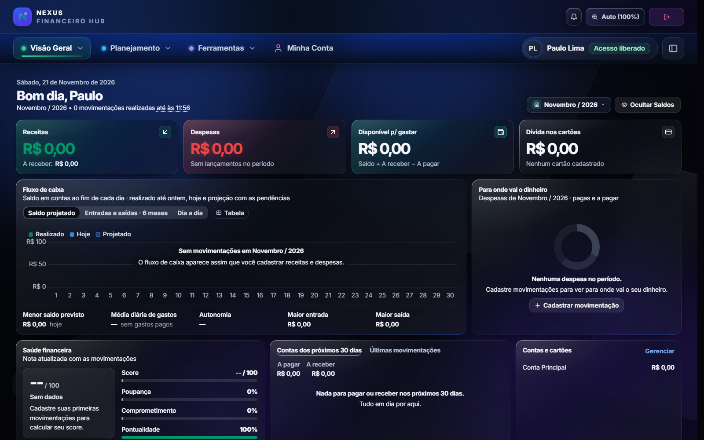
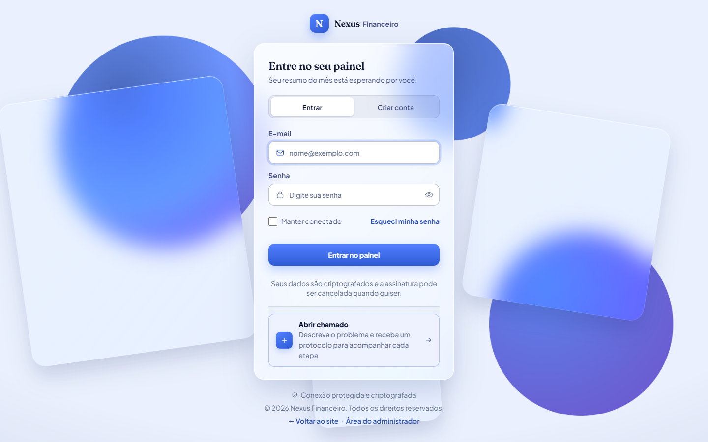

1. Arquitetura geral
O Nexus Financeiro Hub é um sistema Node.js em duas instâncias que se sincronizam: a do Render (produção, atende o domínio público) e a do PC local (homologação, porta 3000). Ambas gravam em três camadas de dados: arquivos JSON locais, Microsoft SQL Server (PC) e Supabase (nuvem).
Regra de ouro: existem DUAS instâncias do server.js — Render (produção) e PC local (homologação, porta 3000). Elas se sincronizam entre si e com o Supabase. Alterar só uma ponta dessincroniza o sistema.
2. Endereços e rotas públicas
| Endereço | O que é |
|---|---|
nexusfinanceirohub.com.br / www. | Domínio oficial — DNS aponta para Cloudflare, que faz proxy ao Render. |
ambiente-de-homologa-ao-sf.onrender.com | Backend direto no Render (origem do proxy do Worker). |
/inicio ou /site | Site institucional antes do login. |
/manual | Manual do usuário (página + botões de download PDF/HTML). |
/login.html | Tela de entrada e cadastro. |
/suporte ou /glpi | Central de Serviços pública. |
/termos.html, /privacidade.html | Páginas legais. |
/ping | Health check simples — acorda e valida o Render. |
/api/health | Saúde da API e do banco. |
/admin-assinaturas-glpi, /admin-site.html | Painéis administrativos (URL amigável → arquivo .html). |
robots.txt, sitemap.xml | SEO gerados dinamicamente a partir de SITE_PUBLIC_URL. |
No PC local, tudo o mesmo em http://localhost:3000.
3. Componentes
3.1 Cloudflare — borda, DNS e keep-awake
- Worker
worker.js+wrangler.jsonc, projetoambiente-de-homologa-ao-sf. - Proxy transparente de tudo que não está em
dist/paraAPP_ORIGIN(padrão: URL do Render). Trocar de backend = mudar essa variável. - Cron Trigger a cada 5 min chama
/ping— é o que ACORDA o Render quando ele dorme. - Deploy:
npm run build(geradist/) +npx wrangler deploy.
3.2 Render — produção Node
- Serviço
sistema-financeiro, blueprintrender.yaml, plano 0.5c-512mb,PORT=10000. autoDeploy: true— todogit push origin maindispara deploy.healthCheckPath: /ping— só troca a versão depois que ela responde (sem derrubar o site).- Disco persistente
nexus-cadastro-dataem/var/data: JSONs de estado,.nexus_jwt_secret,.nexus_sync_token, backups. - Variáveis no painel → Environment (nunca no Git):
JWT_SECRET,NEXUS_SYNC_TOKEN,NEXUS_OWNER_EMAIL,SUPABASE_*,GOOGLE_*.
3.3 PC local — homologação
- Pasta
C:\AMBIENTE DE HOMOLOGAÇAO,node server.js, porta 3000. - Inicialização:
iniciar_servidor.bat→iniciar_servidor_segundo_plano.vbs(node oculto). - Banco: Microsoft SQL Server local, banco
AMBIENTE DE HOMOLOGAÇAO SF, ODBC Driver 17 (Windows Auth + login SQL dedicado). - Scripts:
ativar_tcp_sqlserver.bat,ativar_login_sql.bat. - Fallback offline:
local_users.json,local_database_data.json,local_ordens_servico.jsone demaislocal_*.json. - Backups:
backups_financeiros/(histórico financeiro),backups_contas/.
3.4 Supabase — espelho durável
supabase-sync.jsenvia cada gravação ao Supabase em ~0,4 s; o que não confirmou fica emsupabase_sync_state.jsone é reenviado até o ack — queda de internet/restart não perde dado.- Em disco novo/vazio,
restoreMissingFiles()recompõe os arquivos a partir do Supabase. - Tabelas:
usuarios,transacoes,contas_bancarias,categorias,ordens_servico,tecnicos_suporte,cpf_registry,system_logs,dados_financeiros,nexus_dados_financeiros. - Schema:
supabase/schema.sql.
3.5 Microsoft SQL Server — banco principal do PC
mssql-sync-client.js: adaptador "PostgREST-like" sobre o pool MSSQL — o motor de espelhamento grava no SQL local no mesmo formato do Supabase.sql-vigia.js: edição direta no SQL (SSMS/sqlcmd) é detectada e propagada para espelho → nuvem → Supabase. A mudança externa só é adotada se se repetir igual em duas leituras.- Tabelas:
usuarios,dados_financeiros(JSON por usuário),system_logs,ordens_servico.


4. Sincronização — os fluxos que mantêm tudo igual
| Fluxo | Quem faz | Intervalo |
|---|---|---|
| Render → PC local (usuários/dados) | syncWithRenderCloud via NEXUS_SYNC_TOKEN | ~3–10 s |
| PC local → Supabase (espelho durável) | supabase-sync.js via writeJsonFile | ~0,4 s por gravação |
| PC local → SQL Server | pool mssql + mssql-sync-client.js | na gravação + reconciliação |
| Edição direta no SQL → app/nuvem | sql-vigia.js | leitura contínua |
| Keep-alive Render | keepalive.js (interno ~4 min) + Worker cron (5 min) | contínuo |
| Auto-sync Git local | auto-sync.js (npm run auto:sync, debounce 2,5 s) | sob demanda |
NEXUS_SYNC_TOKEN (ou derivado de JWT_SECRET). Precisa ser o MESMO no .env do PC e no painel do Render — se divergir, a sincronização morre com 401.Login/ping: POST /api/user/login-ping grava last_login em horário de Brasília (America/Sao_Paulo, UTC-3).
5. Variáveis de ambiente
Os nomes abaixo; os valores ficam só no .env local e nos painéis (ver .env.example).
PC local (.env)
PORT, APP_BASE_URL, JWT_SECRET, NEXUS_SYNC_TOKEN, NEXUS_OWNER_EMAIL, NEXUS_RESERVED_EMAILS, DB_TYPE, MSSQL_SERVER, MSSQL_DATABASE, MSSQL_DRIVER, MSSQL_USER, MSSQL_PASSWORD, MSSQL_TRUSTED_CONNECTION, SUPABASE_URL, SUPABASE_SERVICE_ROLE_KEY, SUPABASE_ANON_KEY, GOOGLE_CLIENT_ID, GOOGLE_CLIENT_SECRET, GOOGLE_REDIRECT_URI, SMTP_HOST, SMTP_PORT, SMTP_USER, SMTP_PASS, NEXUS_SITE_INICIAL, NEXUS_DISABLE_DB, NEXUS_DISABLE_SUPABASE, NEXUS_KEEPALIVE, NEXUS_DATA_DIR, CPF_API_*, GOOGLE_SITE_VERIFICATION.
Render → Environment
NODE_ENV, PORT=10000, NEXUS_DATA_DIR=/var/data, JWT_SECRET, NEXUS_SYNC_TOKEN, NEXUS_OWNER_EMAIL, SUPABASE_URL, SUPABASE_SERVICE_ROLE_KEY, SUPABASE_ANON_KEY, GOOGLE_CLIENT_ID, GOOGLE_CLIENT_SECRET, GOOGLE_REDIRECT_URI.
Cloudflare → Worker
APP_ORIGIN (backend). Domínios: nexusfinanceirohub.com.br, www..
SUPABASE_SERVICE_ROLE_KEY e JWT_SECRET dão acesso TOTAL. Se vazarem, gerar novos nos painéis e atualizar os dois lados.6. Deploy e rotinas
Publicar uma alteração
git status→ revisar →git add .→git commit→git push origin main.- O Render faz autoDeploy (build
npm install, startnpm start, health/ping). - Para o PC local refletir: reiniciar o processo da porta 3000.
- Mudança em
worker.js/wrangler.jsonc/dist:npm run build+npx wrangler deploy. - O hook
scripts/proteger_git.jsbloqueia commit com segredo/e-mail real — corrigir o arquivo, nunca usar--no-verify.
Verificações rápidas
| Comando | O que valida |
|---|---|
npm test | Sintaxe de todos os módulos + suíte de testes |
curl.exe http://localhost:3000/api/health | Saúde local (API + banco) |
curl.exe https://nexusfinanceirohub.com.br/ping | Saúde produção via domínio |
curl.exe https://ambiente-de-homologa-ao-sf.onrender.com/ping | Saúde produção direta |
Rotinas de manutenção
- Backups financeiros: automáticos em
backups_financeiros/(fora do Git); restauração viapickBest(). - Logs:
system_logs.json(auditoria local ~1000 entradas; histórico completo no Supabase) e console donode server.js. - Estados de sync:
pending_logins.json,sql_vigia_estado.json,supabase_sync_state.json— não apagar com o servidor rodando. - Disco Render (1 GB em /var/data): se encher, limpar estados antigos mantendo
.nexus_jwt_secret,.nexus_sync_tokene os JSONs de dados.
7. Troubleshooting
| Sintoma | Provável causa | O que fazer |
|---|---|---|
| Site fora / timeout | Render dormindo ou deploy | curl /ping; aguardar ~50 s; checar deploy e env vars no painel Render |
| Login no PC ok, no site não | NEXUS_SYNC_TOKEN/JWT_SECRET divergentes | Comparar variáveis nos dois lados |
| Dados "somem" após restart | Restore do Supabase falhou | Ver supabase_sync_state.json, chave service_role, restoreMissingFiles no log |
| Edição no SSMS volta atrás | Comportamento do vigia | Mudança externa precisa repetir igual em 2 leituras; checar sql-vigia.js |
| E-mail de senha não chega | SMTP | Conferir SMTP_* no .env/Render |
| Login Google falha | OAuth | GOOGLE_REDIRECT_URI deve bater com o Google Cloud Console |
| PC local não sobe | Porta 3000 ocupada / SQL off | netstat -ano | findstr :3000; subir SQL (ativar_tcp_sqlserver.bat) |
| Estáticos 404 | Fora da whitelist | STATIC_EXACT_FILES e /images/ em server.js (~linha 39198) |
| Commit bloqueado por "segredo" | Hook verificar_segredos.js | Remover valor real do arquivo |
| Sessões caem ao reiniciar | .nexus_jwt_secret não persistiu | Conferir NEXUS_DATA_DIR gravável |
| Keep-alive falha | Cloudflare/Worker | Painel Cloudflare → Workers → logs; testar curl domínio/ping |
8. Segurança — o que NUNCA fazer
- Nunca commitar
.env,.nexus_*,local_*.jsoncom dados reais,system_logs.jsoncom dados de clientes. - Nunca colocar segredo no
render.yaml,wrangler.jsonc, HTML ou código —sync:falseexiste justamente para isso. - O repositório pode ser público: trate todo arquivo commitado como público.
service_roledo Supabase = acesso total ao banco;NEXUS_SYNC_TOKEN= vira admin da sincronização.- Não usar
git commit --no-verifypara contornar o hook de segredos. - Rotas
/admin-*e/api/*são protegidas por token — não expor em links públicos.
9. Mapa de arquivos-chave
| Arquivo | Papel |
|---|---|
server.js (~40 mil linhas) | Backend inteiro: rotas, API, páginas, SQL, sync, segurança |
page.html | App principal (SPA servido em /) |
site-inicial.html/.css/.js | Site público /inicio |
glpi-enterprise.html | Central de Serviços (/suporte) |
supabase-sync.js | Espelho durável → Supabase |
mssql-sync-client.js | Adaptador PostgREST→MSSQL |
sql-vigia.js | Vigia de edição direta no SQL |
backup-financeiro.js | Backup histórico de dados financeiros |
keepalive.js + worker.js/wrangler.jsonc | Keep-alive Render (interno + Cloudflare) |
render.yaml | Blueprint do serviço Render |
supabase/schema.sql | Schema das tabelas Supabase |
menu-topo.js/.css | Menu superior do app |
manual-do-usuario.html | Manual público (site, rota /manual) |
MANUAL-TECNICO.md | Versão Markdown deste manual |
AGENTS.md / GEMINI.md | Regras de operação do agente |
.agents/skills/nexus-homologacao/ | Runbook operacional da skill |
10. Painéis e contas
| Serviço | Painel | Observação |
|---|---|---|
| GitHub | github.com/paulolimauai/AMBIENTE-DE-HOMOLOGA-AO-SF | branch main, autoDeploy |
| Render | dashboard.render.com → sistema-financeiro | env vars, disco /var/data, logs |
| Cloudflare | dash.cloudflare.com → Workers ambiente-de-homologa-ao-sf | DNS, APP_ORIGIN, cron |
| Supabase | supabase.com → projeto | service_role em API settings |
| Google Cloud | console.cloud.google.com | OAuth client + Search Console (GSV) |
| SQL Server | SSMS local | banco AMBIENTE DE HOMOLOGAÇAO SF |
.env do PC e nos painéis acima.